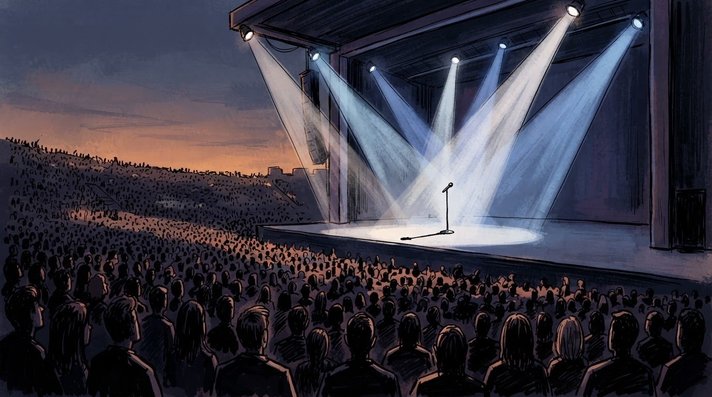

Skena, gati për performancën që u bë vetëm hipotezë financiare. Foto: Ardian Reflektori (ka humbur numërimin te fatura e tretë).
Showbiz • Kosova
Festivali ofron yllin ndërkombëtar "me staf të reduktuar" — buxheti thotë jo
Negociatat u zhvilluan në gjuhë të shenjave financiare: organizatorët ofruan tetor, ylli kërkoi valutë të fortë — redaksia jonë e quan këtë "diplomaci artistike, faza e parë".